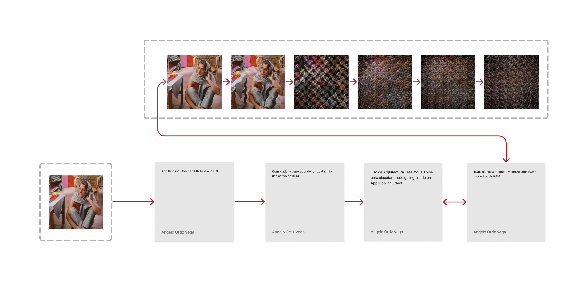
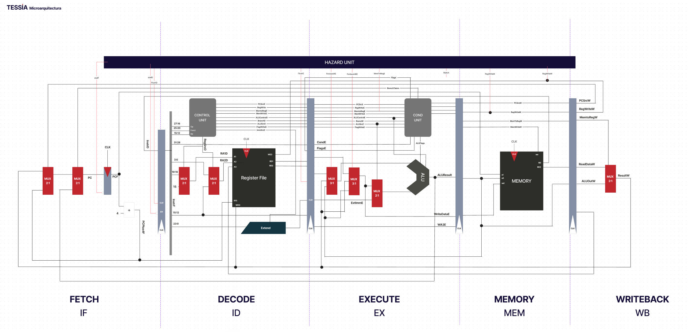

Tessia
May 19, 2023
Rippling Effect es un proyecto de diseño e implementación de un ASIP (Procesador Específico de Aplicaciones) para animación de imagen utilizando el efecto rippling. Este proyecto se desarrolló como parte del curso CE4301 - Arquitectura de Computadores I, con el objetivo de aplicar los conceptos de arquitectura de computadores en el diseño e implementación en hardware de un ASIP.
Requerimientos Generales
- Se debe considerar que la capacidad de memoria maxima a utilizar en la FPGA es de 4450 kbits de memoria.
- Se debe tener en cuenta que el procesamiento de la imagen se realizará progresivamente, observando al menos 40 transiciones en 10 segundos, como se muestra en el script guía proveído por el profesor.
- Se debe considerar la compatibilidad del diseño con la tarjeta de desarrollo Terasic DE1-SoC. Para ello, el diseño completo debe ser sintetizable y utilizable en esta tarjeta.
- El sistema debe permitir la interacción del usuario para indicar cuándo iniciar el proceso de animación.Finalmente, se debe considerar la presentación del resultado del proceso. En este caso, se debe mostrar el resultado del proceso en un monitor VGA.
Link al Proyecto



